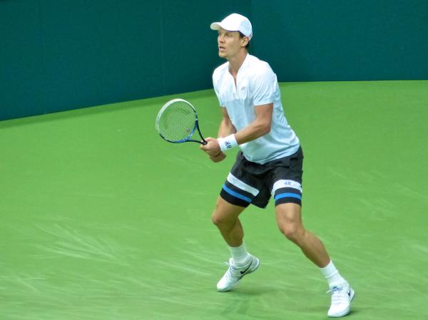

EL MUNDO DEL DEPORTE

¿QUIENES SOMOS?
Somos un complejo deportivo dedicado a los niños entre 3 a 15 años. Dentro del mismo ellos podran desenvolverse tanto fisica y cognitivamente a traves de juegos. Desde el complejo nos comprometemos a hacer crecer al niño en un ambito ludico, recreativo y familiar, ya que consideramos a la familia como un nexo clave a la hora de interactuar y acompañar al niño en este proceso de enseñanza-aprendizaje.

¿QUE TIPOS DE DEPORTES EXISTEN EN NUESTRO ESPACIO?
Si bien la clasificación de deportes es amplia y muy extensa en nuestro espacio decidimos dividirla en 3 tipos. Los tipos son: - Deportes Colectivos - Deportes Individuales - Deportes Olimpicos. La familia y el niño podran enfocarse en el deporte que sea de su interes, las ramas "Deportes Colectivos" y "Deportes Individuales" se caracterizan por su enfoque lúdico mientras que la rama "Deportes Olimpicos" esta destinada a los que quieran un ambito mas competitivo.



NUESTRO ESPACIO
A continuación les dejamos un plano de nuestras instalaciones:

EL DEPORTE COMO BENEFICIO PARA LA SALUD

Beneficios físicos de la actividad física Mejora la forma física y la resistencia. Regula la presión arterial. Ayuda a mantener una buena densidad ósea. Mejora la flexibilidad. Fortalece músculos, tendones, ligamentos y articulaciones. Ayuda a perder peso. Reduce el riesgo de padecer diabetes de tipo 2. Fortalece el corazón y mejora la salud cardiovascular. Mejora la condición aeróbica. Reduce el riesgo de padecer ciertos tipos de cáncer como, por ejemplo, cáncer de mama o cáncer de pulmón. Evita la osteoporosis. Fortalece el sistema inmunológico. Ayuda a controlar el colesterol. Mejora la digestión. Regula el ritmo intestinal. Nos hace más fuertes. Aumenta la esperanza de vida.